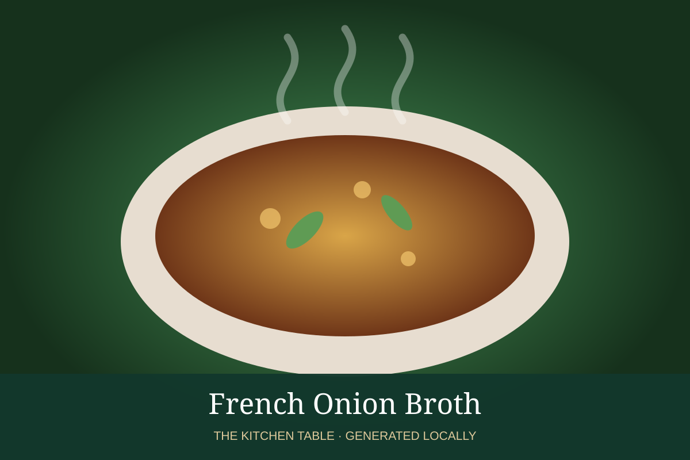

← Back to all recipes
BROTH & STOCK · FRENCH
French Onion Broth
Deep onion-forward beef broth base for French onion soup.
Broth & StockFrench

Ingredients
- 4 large onions, thinly sliced
- 3 tbsp butter
- 1 tbsp flour, optional
- 1/2 cup dry wine
- 6 cups beef broth
- 2 thyme sprigs
- 1 bay leaf
Preparation
- Caramelize onions slowly in butter until deep brown, 45–60 minutes.
- Deglaze with wine and reduce.
- Add beef broth, thyme, and bay.
- Simmer 30 minutes and adjust seasoning.